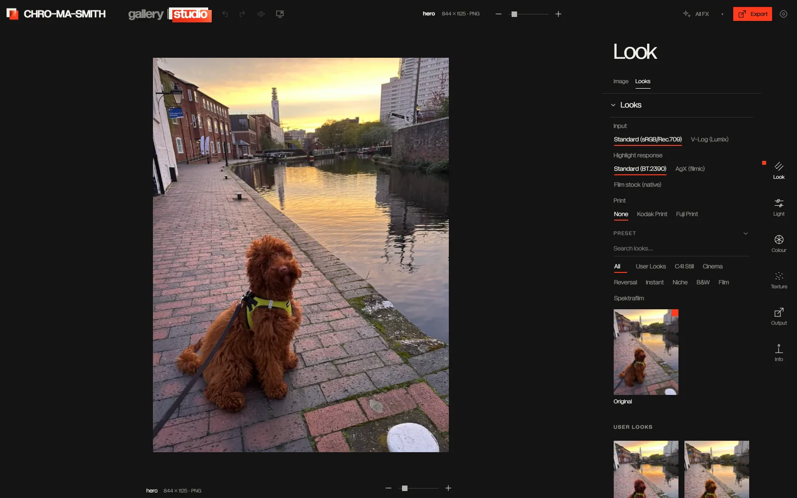
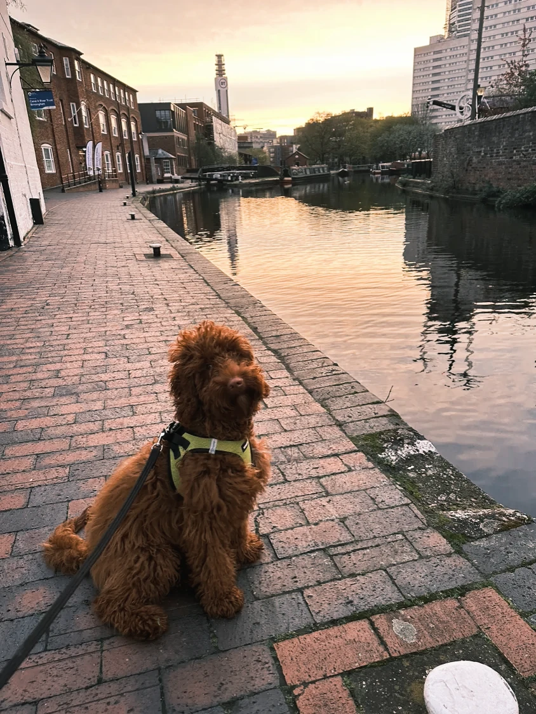

Scroll to develop
Every frame,
developed.
01 Raw
02 Film look
03 Grain
04 Halation


Next section
Scroll to develop
Move the lens
A darkroom that lives in your browser. Film looks, grain and halation, all offline.


